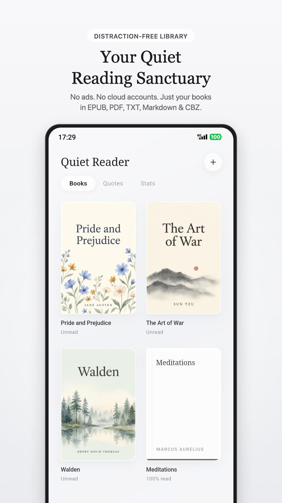
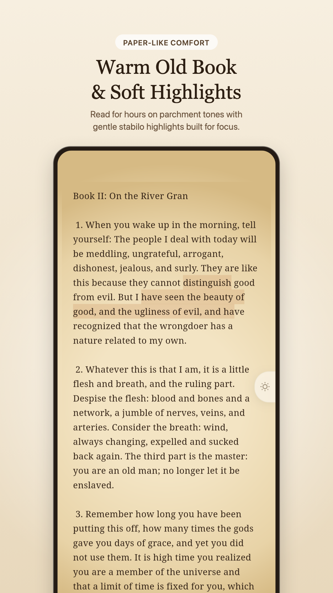
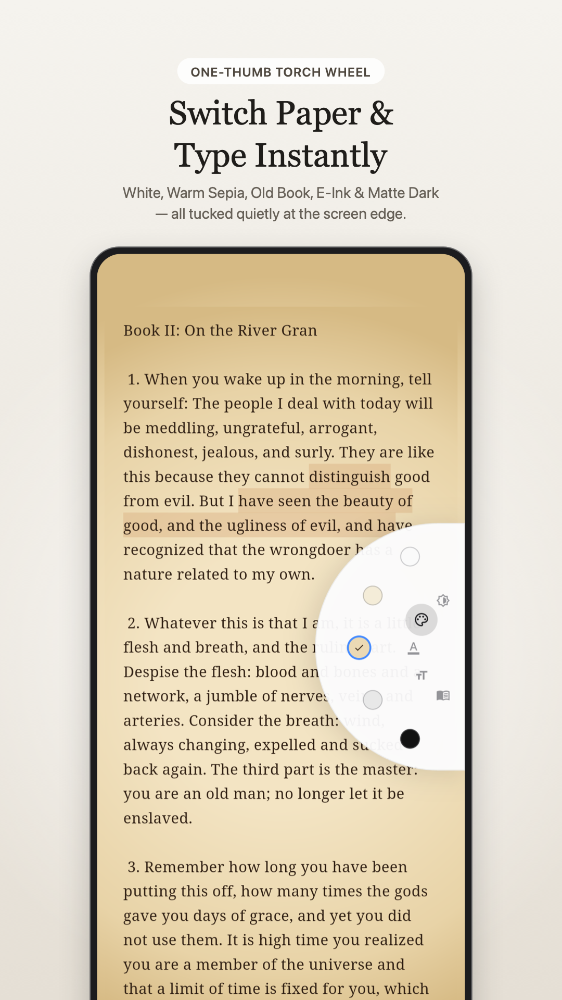
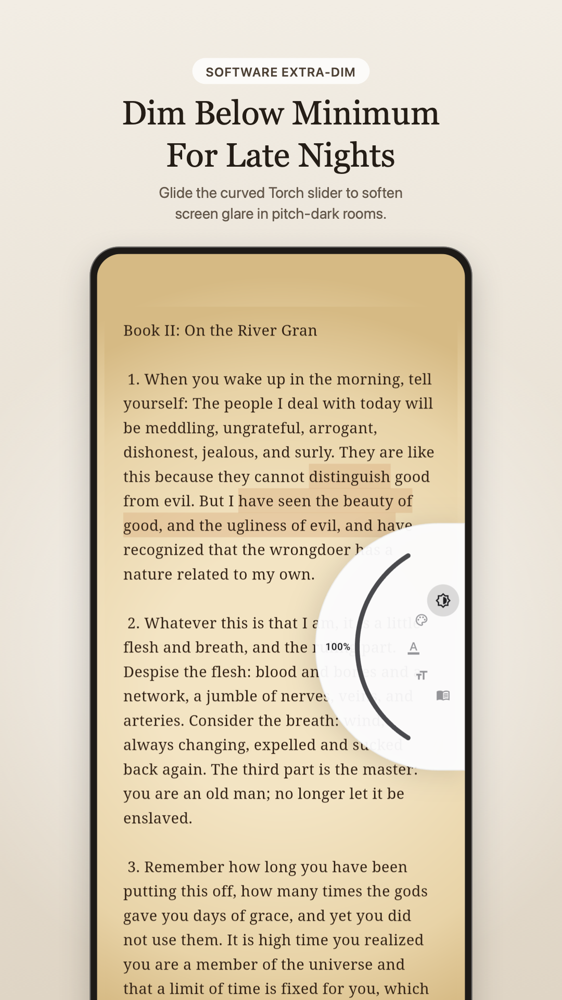
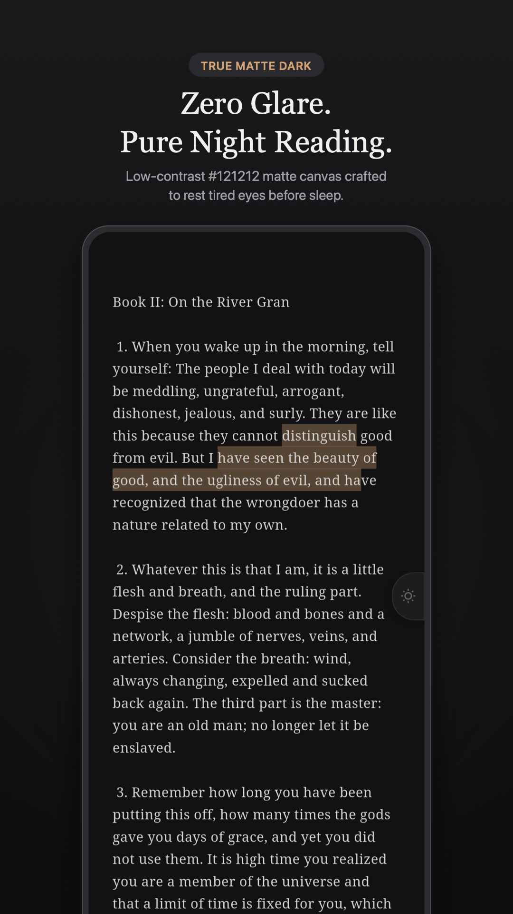
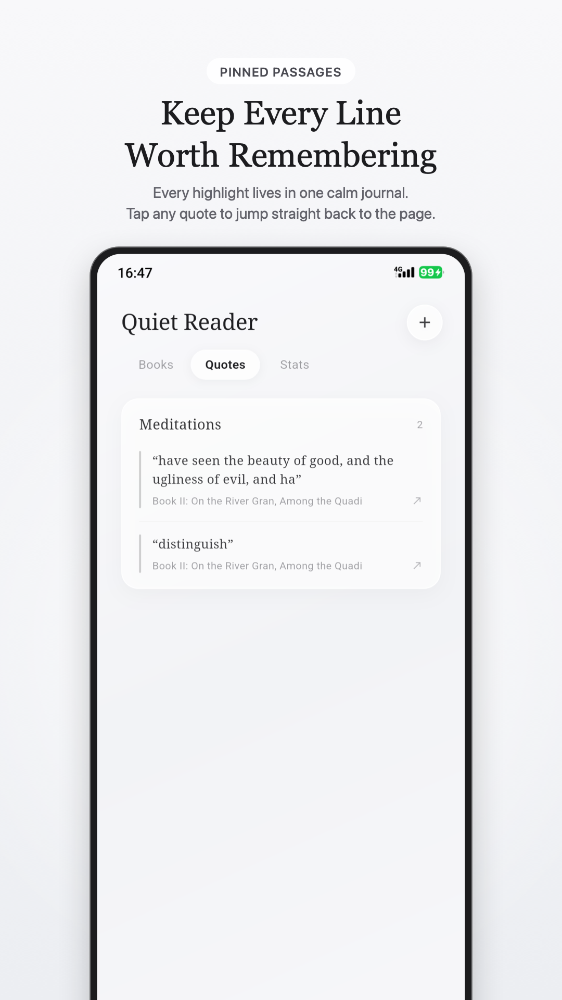
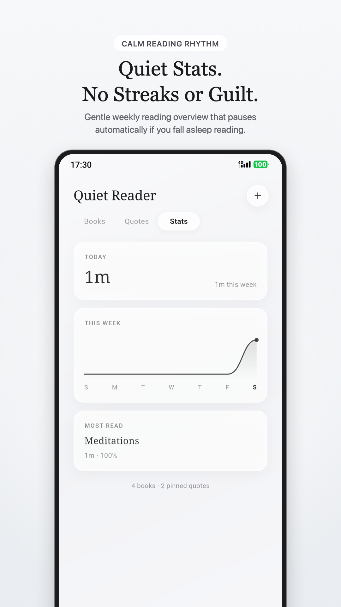

Edge-Docked Torch Wheel
Glide one thumb along a semi-circular dial to dim below minimum hardware brightness (Extra-Dim), switch paper presets, ink tone, or font size without leaving the page.
An ultra-minimalist, 100% offline book reader for Android built for screen comfort — day or pitch-black night. No ads, no accounts, no bookstore clutter.
Free · EPUB, PDF, TXT, Markdown, HTML, FB2 & CBZ · 100% Private







Controls stay invisible until your thumb calls them — keeping your eyes anchored on the page.
Glide one thumb along a semi-circular dial to dim below minimum hardware brightness (Extra-Dim), switch paper presets, ink tone, or font size without leaving the page.
Choose Pure White, Warm Sepia, Old Book Parchment, E-Ink Grayscale, or low-glare Matte Dark (#121212) tuned for tired late-night eyes.
Import EPUB, PDF, TXT, Markdown, HTML, FB2, and CBZ directly from your device via Android Scoped Storage. No accounts, no cloud sync, no ads.
Highlight passages with soft stabilo and jump back to the exact page anytime. Track reading rhythm quietly with automatic 10-minute sleep pause and zero streak pressure.
Quiet Reader enters Google Play Closed Testing on December 5. Help test the v1.0 release for 14 days and shape what comes next.
Only used to whitelist your Gmail on Google Play Console. Zero spam.